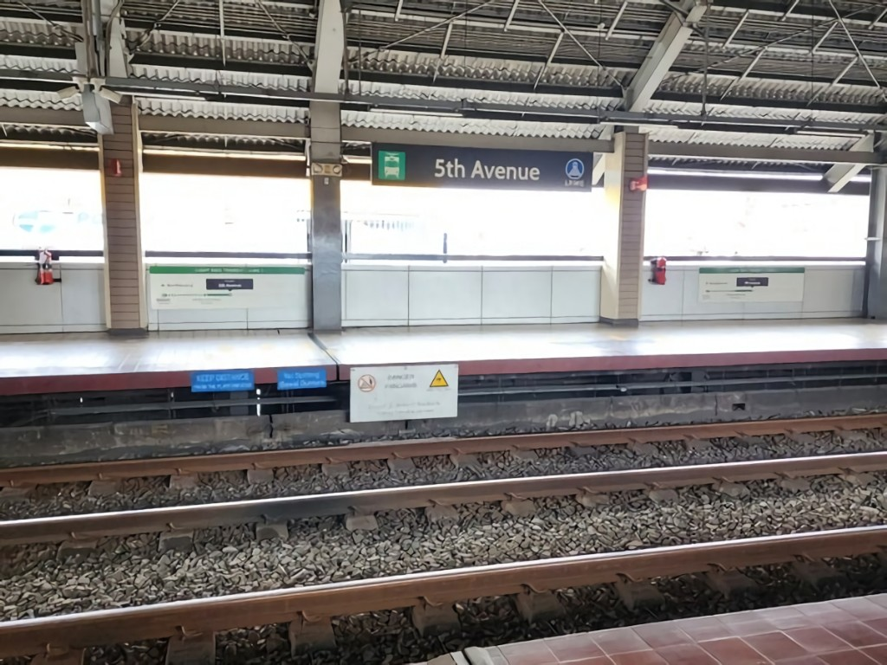
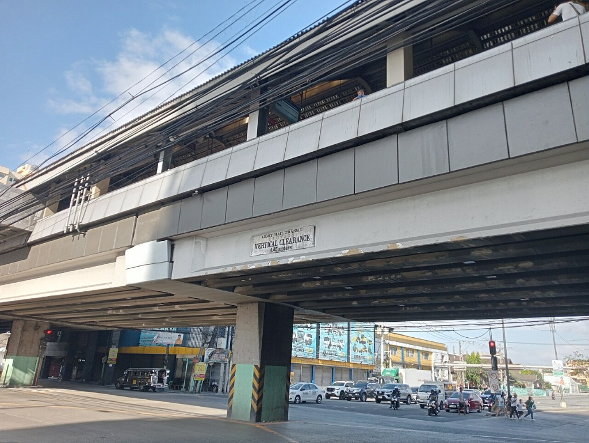

5th Avenue
LRT-1 station
5th Avenue station is an elevated Light Rail Transit (LRT) station located on the LRT Line 1 (LRT-1) system in Caloocan, Philippines. The station is situated on the intersection of Rizal Avenue Extension and 5th Avenue, after which the station is named, at the boundaries of Grace Park East and Grace Park West.
5th Avenue station serves as the 4th station for LRT-1 trains headed to Dr. Santos, the 22nd station for trains headed to Fernando Poe Jr., and is one of the two LRT-1 stations serving Caloocan, the other being Monumento station.
5th Avenue station serves as the 4th station for LRT-1 trains headed to Dr. Santos, the 22nd station for trains headed to Fernando Poe Jr., and is one of the two LRT-1 stations serving Caloocan, the other being Monumento station.
| 5th Avenue | |||||||
|---|---|---|---|---|---|---|---|
|  | |||||||
| General information | |||||||
| Location | 242 Rizal Avenue Extension, Grace Park East, Caloocan, Metro Manila, Philippines | ||||||
| Owned by |
|
||||||
| Operated by | Light Rail Manila Corporation | ||||||
| Line(s) | LRT Line 1 | ||||||
| Platforms | 2 (2 side) | ||||||
| Tracks | 2 | ||||||
| Connections | None | ||||||
| Construction | |||||||
| Structure type | Elevated | ||||||
| Parking | No | ||||||
| Bicycle facilities | No | ||||||
| Accessible |
Concourse: All entrances
Platforms: All platforms |
||||||
| Other information | |||||||
| Status | Operational | ||||||
| Station code | 5A | ||||||
| History | |||||||
| Opened | May 12, 1985 | ||||||
| Services | |||||||
|
|||||||

5th Avenue station from street level
5th Avenue station was opened to the public on May 12, 1985, as part of the Rizal Line, which extended the LRT northward to Monumento.
The station is served by buses, and jeepneys plying the Rizal Avenue and 5th Avenue routes. Tricycles may also be boarded at nearby streets.
| Operational | |
|---|---|
|
Dr. Santos
Ninoy Aquino Asia World MIA Redemptorist Baclaran EDSA Libertad Gil Puyat Vito Cruz Quirino Pedro Gil |
United Nations
Central Carriedo Doroteo Jose Bambang Tayuman Blumentritt Abad Santos R. Papa 5th Avenue Monumento Balintawak |
| Fernando Poe Jr. | |
| Under construction | |
|
Las Piñas
Zapote |
Niog
North Triangle |